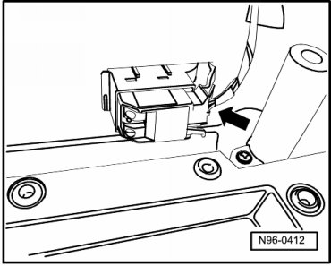
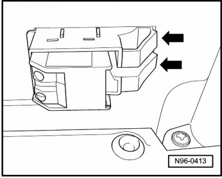
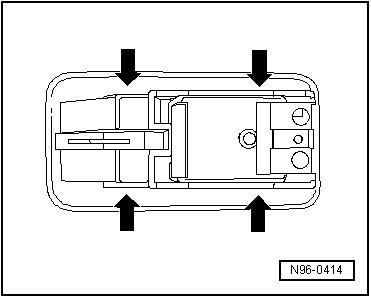

Passenger Door Window Regulator Switch
Front Door Lamps and Switches
Passenger Door Window Regulator Switch
CAUTION!
When removing and installing components in visible area (switches, covers, trim, etc.), cover by taping the areas at which a prying tool (plastic wedge, screwdriver) will be positioned using commercially available adhesive tape.
• Removal and installation of Window Regulator Switch (in RF door) (E107), Left Rear Window Switch, (In LR Door) (E52) and Right Rear Window Switch, (In RR Door) (E54) is performed in the same way and is only described for one switch.
• Power Window Switch Lamp (L53), which cannot be replaced separately, is integrated in Window Regulator Switch (in RF door) (E107).
• Power Window Switch Lamp (L53), which cannot be replaced separately, is integrated in Left Rear Window Switch, (In LR Door) (E52).
• Power Window Switch Lamp (L53), which cannot be replaced separately, is integrated in Right Rear Window Switch, (In RR Door) (E54).
Removing
- Switch off ignition, switch off all electrical consumers and remove ignition key.
- Remove door trim.
Removal at front passenger door:.
Removal at rear doors:.
- Release and disconnect the connector - arrow -.

- Disengage retaining tabs - arrows - and remove switch together with installation frame from door trim.

- Disengage retaining tabs - arrows - and remove switch from installation frame.

Installing
Install in reverse order of removal.